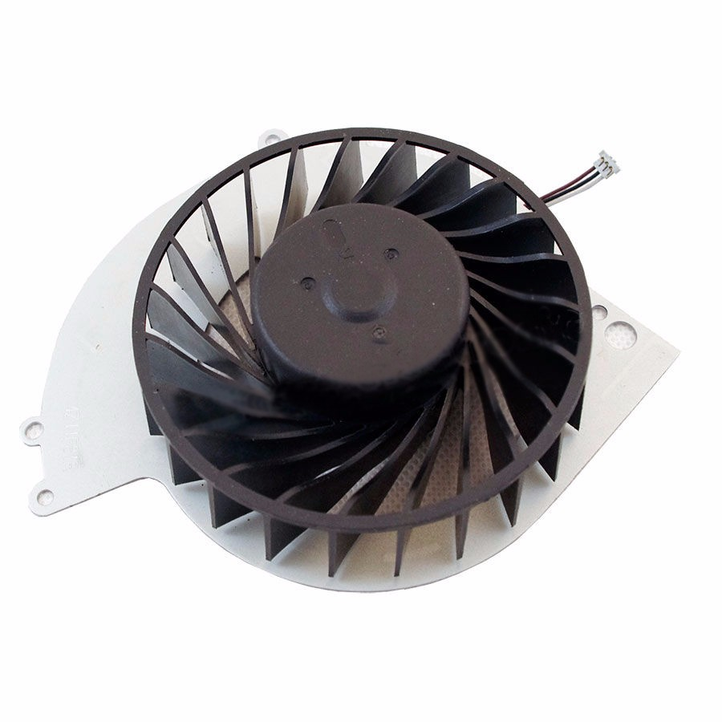

-
hard disc
Op een harde schijf worden gegevens opgeslagen. Alles wat u op uw computer bewaart, bevindt zich op een harde schijf. Niet alleen documenten, afbeeldingen, muziek en video's. Maar ook uw programma's, voorkeuren en zelfs het besturingssysteem; alles wordt op de harde schijf van de computer opgeslagen.
-
optical drive
 Het afspelen van deze typen disks wordt niet ondersteund.
CD BD-RE versie 1.0 BD-R/RE XL Dvd's die niet zijn gefinaliseerd Maak geen gebruik van deze disks. Als je dat wel doet, kan je systeem beschadigd raken. Disks van 8 cm Niet-ronde disks, zoals disks in de vorm van een kaart, ster of hart Disks die gescheurd of vervormd zijn of disks die zijn gerepareerd Een DualDisc bevat één zijde die voldoet aan de DVD-norm en een andere zijde met alleen audio. De zijde met alleen audio kan niet worden afgespeeld op je PS4™-systeem.
Het afspelen van deze typen disks wordt niet ondersteund.
CD BD-RE versie 1.0 BD-R/RE XL Dvd's die niet zijn gefinaliseerd Maak geen gebruik van deze disks. Als je dat wel doet, kan je systeem beschadigd raken. Disks van 8 cm Niet-ronde disks, zoals disks in de vorm van een kaart, ster of hart Disks die gescheurd of vervormd zijn of disks die zijn gerepareerd Een DualDisc bevat één zijde die voldoet aan de DVD-norm en een andere zijde met alleen audio. De zijde met alleen audio kan niet worden afgespeeld op je PS4™-systeem. -
fan
both the Xbox One S and the original Xbox One consoles are designed to ventilate air to keep them at an optimal temperature during use. Either console may feel hot around the vents, but this is normal. Hot air is being ventilated from the console to cool the interior. Keeping the console free from obstructions and clutter will allow it to ventilate properly,